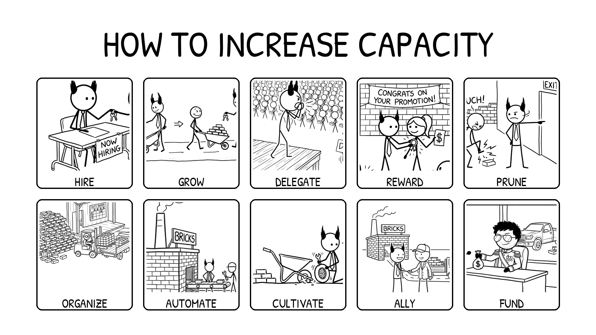

<section id="how-to-cap" data-transition="fade" style="display:flex; align-items:center; justify-content:center; padding:0; background:#fcfcfa">

<p style="position:absolute;left:0;bottom:10px;width:1920px;margin:0;text-align:center;font-family:'Patrick Hand', 'Trebuchet MS', sans-serif;font-size:22px;color:#8a8f98">Copyright Dobromir Montauk 2026</p>
<aside><b>How to increase capacity.</b> Everything on this slide pays off in months or years, not this week, which is why it always loses to this week's fire. Nobody will ask you on Friday why you didn't do a skip-level or fix the on-call rotation. Six months later, everyone will ask why the team is still slow. Block time for these the way you block time for a launch.</aside>
</section>
